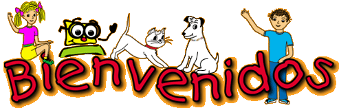

Bienvenida

Nota. Imagen tomada de: https://edumatcreativa.wordpress.com/2013/08/08/bienvenidos-gif-animado-gif/
¡Bienvenidos a esta aventura literaria!
Queridos estudiantes de grado quinto de la Institución Educativa Agrícola Julio Mejía Vélez del municipio de Alto Baudó, Chocó.
Les damos la más cordial bienvenida al Recurso Educativo Digital (RED) "Sumérgete en el maravilloso mundo de los textos narrativos", un espacio diseñado especialmente para que aprendan, exploren y disfruten de la lectura de una manera dinámica, creativa e interactiva.
A lo largo de este recorrido descubrirán las características y diferencias de cuatro importantes textos narrativos: el cuento, la fábula, la leyenda y el mito. Cada uno de ellos les permitirá viajar a mundos llenos de imaginación, conocer enseñanzas valiosas, comprender las tradiciones culturales de los pueblos y desarrollar habilidades para leer, interpretar y crear sus propias narraciones.
Mediante actividades interactivas, lecturas, videos, juegos y ejercicios de reflexión, fortalecerán su comprensión lectora, ampliarán su vocabulario y desarrollarán competencias comunicativas fundamentales para su formación académica y personal. Además, tendrán la oportunidad de reconocer la riqueza cultural de las narraciones tradicionales y valorar las historias que hacen parte de nuestras comunidades y de nuestra identidad.
Los invitamos a participar con entusiasmo, curiosidad y compromiso en cada una de las actividades propuestas. Recuerden que aprender a través de la lectura no solo les ayudará a mejorar sus conocimientos, sino que también les permitirá imaginar, crear y comprender mejor el mundo que los rodea.
¡Prepárense para vivir una experiencia llena de aventuras, personajes fantásticos, enseñanzas y relatos sorprendentes!
¡Comencemos juntos este fascinante viaje por el mundo de los textos narrativos!